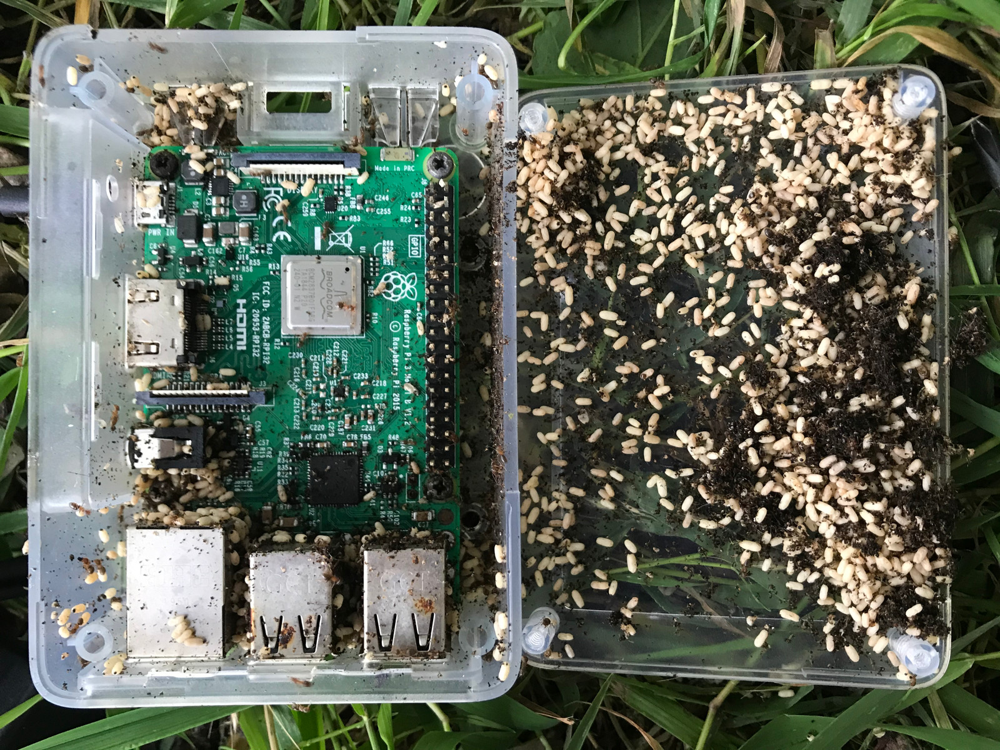
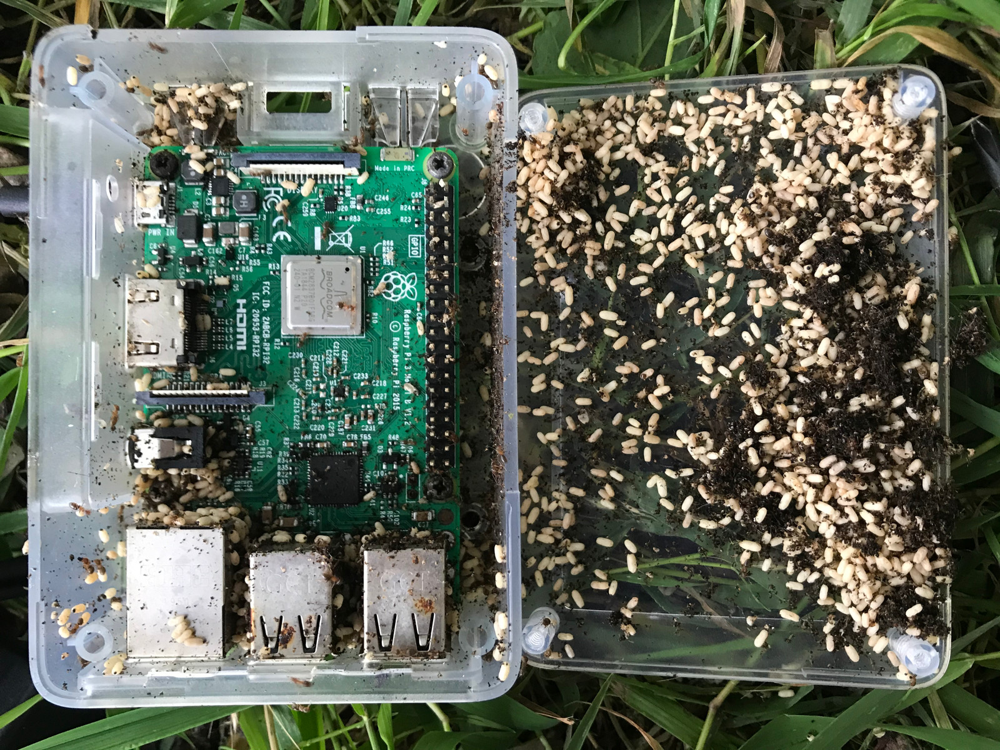

Resources
 Overview
Overview
The first wilding radio stream at Knepp Wilding was created with the aim of broadcasting the evolving sounds of the site with an on-line listenership. In particular, we were interested in how the planned introduction of beavers at Knepp (the first such introduction in Southern England) would change the wet and dry ecosystems and their sounds.
Wilding Radio consists of in situ hardware that sends audio to a remote server and a website where listeners can tune in. The audio is also recorded to create an extended data set of long-term environmental change, as evidenced by the soundworlds of air and water. The design has evolved iteratively over 5 years, in response to weather, flora, fauna and safety considerations. We document that process here, and share a toolkit for others working with live audio streaming, or anybody doing a similar project.
Usage. We share this because we recognise the value of long term listening to ecological change and are keen for others to share the joy. We share this under creative commons license and ask you to drop us a line if you create your own stream.
The installation consists of a stereo feed from microphones on a willow tree above the Laghouse Brook, and a second stereo feed from hydrophones in the water below. A webpage with a slider allows listeners to mix between the streams, which are recorded to create an extended data set of long-term environmental change, as evidenced by the soundworlds of air and water.
This description may be of interest to others working with ecoacoustics, especially live audio streaming, and relevant for anybody doing a similar project. Live Audio Streaming
The Knepp installation relies on approaches developed by Locus Sonus in Aix-Marseille and in the frame of Acoustic Commons (2020-22), a Creative Europe cooperation project [acousticommons.net]. It is a collaboration between the artist cooperative Soundcamp and Alice Eldridge at the Digital Humanities Lab of Sussex University. It is hosted at the Knepp Estate, a wilding project near Horsham, Surrey.
The installation consists of a field transmitter ('streambox'), which receives sounds, digitizes them, and sends them via the internet to an icecast server, where they are available on a public web page for listening. This process happens live, with some seconds of delay from buffering and transmission through the network. The equipment at Knepp runs on a battery charged by solar collectors. The streambox is connected to the power bank with an ethernet cable that carries data and power, allowing the microphones to be near the water, where it is shady, and the solar panels to be in a field open to the sky. We will describe each part of the system in turn.
The above image shows the locations of the hydrophones, streambox, and solar array. For version 1 of the stream we located the stream box and mics high in an oak tree out of reach of curious ungulates. Hydrophones ran through blackthorn thicket to roots of large fallen willow. The solar array was located ESE of a stand of oaks to minimise afternoon shadow. Streambox
The basic streambox made and used by Soundcamp in a variety of places and situations consists of a Raspberry Pi Zero (a small computer) with an IQ Audio Codec Zero (a small soundcard) mounted on the top of it. An SD card serves as a solid state drive. A pair of electret condenser microphones mounted in the walls of the enclosure convey a roughly binaural sense of space. In this case, hydrophones resting on the bottom of the pond, spaced about a meter apart, create an equivalent under the water.
The pilot installation had one channel from a conventional microphone in air, and one from a hydrophone. The streambox was installed in the branches of a large oak tree to keep it out of the reach of pigs and other animals. It used a Focusrite studio soundcard with 48V Phantom power and an Aquarian hydrophone, connected by a 50m XLR cable, which ran down the tree through a length of conduit to the pond. The custom air microphone used two Primo EM-272 capsules to create a device with very low self-noise, following advice posted by Vicki Powys [caperteebirder.com]. This interim design gave the impression of having one ear in the water and one out.
By installing two instances of Darkice onto a single Raspberry Pi 4, we were able to connect two pairs of microphones. Two fresh water hydrophones plug into the Codec Zero soundcard via a dual mono to stereo adaptor, and use its bias voltage (Plug in Power) to run a preamplifier integrated into each hydrophone. The hydrophones [terranovapress.com] are produced by David Rothenberg based on a design by Zach Poff for Pond Station [zachpoffzachpoff.com]. A studio soundcard (Komplete Audio 2 by Native Instruments) supplies 48VDC (Phantom Power) to two custom microphones with Primo Capsules, using the Simple P48 circuit to step the voltage down to around 5V for the capsules [+Streambox with Focusrite Soundcard, tombenedict.wordpress.com]. Windscreens made with foam and synthetic fur reduce wind noise. Overall, this is an affordable setup which gives a sense of space and detail in both air and water streams [wilding.radio]. Technical Specifications
Streambox (basic model – early 2025)
For assembly and detail, see the manual for building from a kit or from scratch: +Streambox Manual – Spring/Summer 2025
This streambox provides a web interface for changing settings such as gain. The stream appears on the Locus Sonus live soundmap and can be embedded in a page or otherwise used for various ecoacoustic projects. The streambox is the result of extensive collaborations (please see Credits).
The basic model above can be modified for particular uses:
Streambox with router
For a possibly more reliable connection to the internet, you can use a dedicated router. At Knepp we put an antenna on a pole, since the internet signal near the ground is weak.
We have also successfully used the larger:
Streambox with hydrophones
The hydrophones which we use at Knepp are the result of a collaboration between Zach Poff and David Rothenberg. They incorporate a preamp/impedance matcher and are optimised for quiet sounds in fresh water. They run on PIP and have low self-noise/hiss. In a separated pair, they can give a persuasive sense of space. This requires a Y cable with two mono sockets combining to a single stereo plug (for use with the codec zero hat in a streambox). Aquabeat hydrophones from Terra Nova Press: terranovapress.com
Streambox with 4 channels
Soundcamp built a streambox with two instances of darkice running on a single Raspberry Pi. One references a USB soundcard; the other references the Codec Zero hat on the Pi. This approach offers energy savings over a system based on two separate Pi’s, and simplifies the Power over Ethernet (PoE) configuration. The software is a prototype. Please email us for details [contact@soundtent.org].
Streambox with bat detector
The streambox can accept a line level feed from a heterodyne bat detector, making it possible to relay sounds of bat echolocation pitched down for human listening in real time.
Power
A streambox can run for a couple of days on a power bank such as the Anker 2100, which fits in the housing. It can run on a larger battery for a week or so. If near a source of power, the streambox can be plugged directly with a mains adaptor, as for TSAC1 at Wave Farm. It can connect to the internet using a USB modem, Wifi or an ethernet cable to a router. Long term installation off-grid needs a renewable energy source. The Knepp live streams run on solar power. Martin Scaiff established that a roughly 200W solar collector was needed to run a streambox off-grid all year round in SE England. By contrast, Locus Sonus used a much smaller (50W?) collector for a stream at l’Étang de Berre near Marseille, where there is sun most days. We installed two 100W rectangular mono-crystalline panels at 30° angles from the ground, facing south. They were mounted on adjustable steel frames. We used timber posts and wire mesh to create a small enclosure fenced off from livestock.
A simple enclosure was built around the solar panels for mutual protection from and for fauna. This meant grass was not cropped by rabbits or cows and needed to be trimmed in summer to prevent shadow on the panels. Leaving rabbit sized holes or adding legs to the aluminum frame might improve the design.
The panels were connected in parallel using waterprooof Y adaptors and T4 connectors. The cables were brought into an over-sized battery box, which houses the battery and other parts of the circuit. A later installation has successfully used a bee nucleus box, mounting the components on a board at the top of the box, going down to the battery in the base. That installation also used powerpole connectors to make connection and dis- connection easier. It included a fuse on the + side of the circuit and used ferrules in preference to bare wire ends, which made connections easier and more secure.
The solar panels feed into a Victron charge controller, which handles the charging of an 80Ah lead acid battery and connection to the load. The charge controller cuts off the load at a set voltage to avoid over-discharge of the battery and prolong its life. The output of the charge controller goes directly at 12VDC to the Teltonika router (via one bare end and a proprietary plug) and to a 12VDC POE injector. The injector steps the voltage up to 48VDC and passes ( ‘injects’) it to a pair of wires in an ethernet cable. The injector also accepts a data connection from the Teltonika router, housed in the same box, with an antenna on a timber pole in the stock-proof enclosure. The injector passes the data feed through to a separate pair of wires in the same ethernet cable. This long ethernet cable plugs into a socket in the injector and runs around 70m to the streambox, where it connects to a splitter. This feeds the power and data lines separately to the power socket and ethernet port of the Pi 4. (For the basic streambox, this is done by a proprietary POE splitter/adapter included in the parts list.)
POE combines data connection and power in the same lightweight, affordable cable. It avoids the problem of voltage drop over distance. We initially used a standard CAT5e / CAT6 cable in a length of corrugated pipe. The pipe was buried under a path for extra protection. The corrugated pipe did not provide a complete shield. The cable was at risk of damage while being pulled through the pipe during installation, and later it was chewed by rodents. We eventually replaced it with an armoured cable that incorporates a metal sheath in its construction. This was left without additional protection and has proved resilient. On the other hand, it is expensive, heavy and inflexible, making it harder to install and terminate and interface with other lightweight components. We noted that working with ethernet equipment designed for indoor networking environments could be awkward in the field. Similarly, working with standard networking equipment, rather than studio grade audio networking equipment, led to some unpredictability. An apparently ‘better’ (more rugged, ‘industrial’ spec) splitter, for instance, turned out to be noisy. Hydrophones, in particular, are sensitive to electromagnetic interference and tend to reveal self-noise (e.g. sounds of internal processing) in the signal chain, which are not easy to interpret or troubleshoot.
As a research project, the Knepp installation proceeded bit by bit. It included false starts, spaghetti (Cyberforest), and experiences with other animals (pigs, snakes, ants). Partly as a result, it took a long time to get up and running in a stable way. At the moment (10 March 2025), oak trees to the West of the solar panels have grown, reducing overall solar gain and causing the system to move into a seasonal and weather-responsive mode, with outages over winter and overcast periods. When the sun has re- charged the system, the stream returns. A later version of the solar powered streambox, running a single stream, is being trialled at Gair Wood outside Leeds. This uses a more frugal arrangement of a 20W panel and 40 or even 30 Ah battery, developed by Nick Millar. This is a simpler installation, with the solar system powering a single basic streambox with modem, as described in the Manual linked above. Multispecies Practical & Ethical Considerations
Incorporating electronic infrastructure into a natural habitat creates opportunities and risks for resident species that need consideration.
Consultation and continued communication with the landowner and users of the spaces are important. This will surface key environmental or social challenges and help ameliorate unexpected ones as they arise. Live streaming to a public website requires consideration of privacy. The knepp site is away from publicly accessible areas, with the only visitors being part of the beaver tours. They are informed that their voices may be broadcast. The specifics of each case should be considered.
Despite close planning with the estate ecologist, a surprising number of species found various electronic components to be appealing habitat, with varying degrees of entertainment and impact on and for the system and the creatures.
Mason bees created cells across the charge controller, creating a short circuit (not sure what they gained or suffered). After this we taped up the side with electrical tape and didn’t happen again.

Wood (?) ants created a nursery in the raspberry pi case, the humidity corroded the chip and ethernet sockets. We assume they are attracted to the dry warmth of the box; some species are also known to have an affinity for electric fields. We tried “ant proofing” the box, but ultimately upgraded to a small peli case which has been creature-proof for several years.
Mice or other rodents chewed through the ethernet cable where it was not shielded by tubing. We upgraded to an armoured ethernet cable that was difficult to terminate, but protected from wildlife.

Slow worms and grass snakes seemed to really enjoy the dry warmth of the plastic battery box. They caused no harm and have been a constant presence.
We learned that pigs and especially teenage piglets revel in unterring carefully interred cables. We just ensured no harm could come to them, that all cables were protected and let the grass grow and their interest wane.
Credits / References
The streaming software was developed by Stéphane Cousot at Locus Sonus based on the open source Darkice by Ákos Maróy and Rafael Diniz [darkice.org]. The microphone design benefitted from input by Udo Noll [aporee.org] and others.
— How to on streambox
— Solar how to
— Description of the installation
— Links to technical and other resources / contexts
OverviewThe first wilding radio stream at Knepp Wilding was created with the aim of broadcasting the evolving sounds of the site with an on-line listenership. In particular, we were interested in how the planned introduction of beavers at Knepp (the first such introduction in Southern England) would change the wet and dry ecosystems and their sounds.
Wilding Radio consists of in situ hardware that sends audio to a remote server and a website where listeners can tune in. The audio is also recorded to create an extended data set of long-term environmental change, as evidenced by the soundworlds of air and water. The design has evolved iteratively over 5 years, in response to weather, flora, fauna and safety considerations. We document that process here, and share a toolkit for others working with live audio streaming, or anybody doing a similar project.
Usage. We share this because we recognise the value of long term listening to ecological change and are keen for others to share the joy. We share this under creative commons license and ask you to drop us a line if you create your own stream.
The installation consists of a stereo feed from microphones on a willow tree above the Laghouse Brook, and a second stereo feed from hydrophones in the water below. A webpage with a slider allows listeners to mix between the streams, which are recorded to create an extended data set of long-term environmental change, as evidenced by the soundworlds of air and water.
This description may be of interest to others working with ecoacoustics, especially live audio streaming, and relevant for anybody doing a similar project. Live Audio Streaming
The Knepp installation relies on approaches developed by Locus Sonus in Aix-Marseille and in the frame of Acoustic Commons (2020-22), a Creative Europe cooperation project [acousticommons.net]. It is a collaboration between the artist cooperative Soundcamp and Alice Eldridge at the Digital Humanities Lab of Sussex University. It is hosted at the Knepp Estate, a wilding project near Horsham, Surrey.
The installation consists of a field transmitter ('streambox'), which receives sounds, digitizes them, and sends them via the internet to an icecast server, where they are available on a public web page for listening. This process happens live, with some seconds of delay from buffering and transmission through the network. The equipment at Knepp runs on a battery charged by solar collectors. The streambox is connected to the power bank with an ethernet cable that carries data and power, allowing the microphones to be near the water, where it is shady, and the solar panels to be in a field open to the sky. We will describe each part of the system in turn.
The above image shows the locations of the hydrophones, streambox, and solar array. For version 1 of the stream we located the stream box and mics high in an oak tree out of reach of curious ungulates. Hydrophones ran through blackthorn thicket to roots of large fallen willow. The solar array was located ESE of a stand of oaks to minimise afternoon shadow. Streambox
The basic streambox made and used by Soundcamp in a variety of places and situations consists of a Raspberry Pi Zero (a small computer) with an IQ Audio Codec Zero (a small soundcard) mounted on the top of it. An SD card serves as a solid state drive. A pair of electret condenser microphones mounted in the walls of the enclosure convey a roughly binaural sense of space. In this case, hydrophones resting on the bottom of the pond, spaced about a meter apart, create an equivalent under the water.
The pilot installation had one channel from a conventional microphone in air, and one from a hydrophone. The streambox was installed in the branches of a large oak tree to keep it out of the reach of pigs and other animals. It used a Focusrite studio soundcard with 48V Phantom power and an Aquarian hydrophone, connected by a 50m XLR cable, which ran down the tree through a length of conduit to the pond. The custom air microphone used two Primo EM-272 capsules to create a device with very low self-noise, following advice posted by Vicki Powys [caperteebirder.com]. This interim design gave the impression of having one ear in the water and one out.
By installing two instances of Darkice onto a single Raspberry Pi 4, we were able to connect two pairs of microphones. Two fresh water hydrophones plug into the Codec Zero soundcard via a dual mono to stereo adaptor, and use its bias voltage (Plug in Power) to run a preamplifier integrated into each hydrophone. The hydrophones [terranovapress.com] are produced by David Rothenberg based on a design by Zach Poff for Pond Station [zachpoffzachpoff.com]. A studio soundcard (Komplete Audio 2 by Native Instruments) supplies 48VDC (Phantom Power) to two custom microphones with Primo Capsules, using the Simple P48 circuit to step the voltage down to around 5V for the capsules [+Streambox with Focusrite Soundcard, tombenedict.wordpress.com]. Windscreens made with foam and synthetic fur reduce wind noise. Overall, this is an affordable setup which gives a sense of space and detail in both air and water streams [wilding.radio]. Technical Specifications
Streambox (basic model – early 2025)
1
Raspberry Pi Zero W (with wifi; header pins soldered)
2
IQ Audio Code Zero (audio hat with microphone input and ADC) and fixings
3
Anti-static bag
4
SD Card (Class 10 8 GB; works as the Pi's hard drive)
5
Windscreens (fur with cable ties <) +Microphones manual on how to make them.
6
Modem (Huawei E8372 or ZTE MF79u) connects to internet and sets up a local wifi network
7
On The Go (OTC) cable (micro USB plug to USB A socket; 15.5cm)
8
USB extension cable (1m +)
9
Stereo microphones. Available from Soundcamp, Micbooster or see these DIY notes:+Microphones manual.
10
Cable glands (Right channel lock nut Red)
11
Dribox enclosure with 2 pre-drilled holes
12
Battery (may be left out for transport)
13
Battery cable (micro USB to USB A; to charge the battery or power the Pi)
14
Power adapter (mains 110-220VAC to 5VDC with interchangeable plugs)
15
Battery eg Anker powercore 20100.
16
SIM card
17
OPTIONAL – POE adapter for Pi Zero: thepihut.com
For assembly and detail, see the manual for building from a kit or from scratch: +Streambox Manual – Spring/Summer 2025
This streambox provides a web interface for changing settings such as gain. The stream appears on the Locus Sonus live soundmap and can be embedded in a page or otherwise used for various ecoacoustic projects. The streambox is the result of extensive collaborations (please see Credits).
The basic model above can be modified for particular uses:
Streambox with router
For a possibly more reliable connection to the internet, you can use a dedicated router. At Knepp we put an antenna on a pole, since the internet signal near the ground is weak.
—
Router: Teltonika RUT240: teltonika-networks.com
—
Antenna: Poynting PUCK-2 IOT/M2M 4G/5G 2-IN-1 Transportation Puck Antenna or similar
We have also successfully used the larger:
—
Fullband MIMORAD Outdoor 4G/5G MIMO Antenna 6dBi Peak Gain with 2 x 5m cables with SMA Male Connectors
Streambox with hydrophones
The hydrophones which we use at Knepp are the result of a collaboration between Zach Poff and David Rothenberg. They incorporate a preamp/impedance matcher and are optimised for quiet sounds in fresh water. They run on PIP and have low self-noise/hiss. In a separated pair, they can give a persuasive sense of space. This requires a Y cable with two mono sockets combining to a single stereo plug (for use with the codec zero hat in a streambox). Aquabeat hydrophones from Terra Nova Press: terranovapress.com
Streambox with 4 channels
Soundcamp built a streambox with two instances of darkice running on a single Raspberry Pi. One references a USB soundcard; the other references the Codec Zero hat on the Pi. This approach offers energy savings over a system based on two separate Pi’s, and simplifies the Power over Ethernet (PoE) configuration. The software is a prototype. Please email us for details [contact@soundtent.org].
Streambox with bat detector
The streambox can accept a line level feed from a heterodyne bat detector, making it possible to relay sounds of bat echolocation pitched down for human listening in real time.
Power
A streambox can run for a couple of days on a power bank such as the Anker 2100, which fits in the housing. It can run on a larger battery for a week or so. If near a source of power, the streambox can be plugged directly with a mains adaptor, as for TSAC1 at Wave Farm. It can connect to the internet using a USB modem, Wifi or an ethernet cable to a router. Long term installation off-grid needs a renewable energy source. The Knepp live streams run on solar power. Martin Scaiff established that a roughly 200W solar collector was needed to run a streambox off-grid all year round in SE England. By contrast, Locus Sonus used a much smaller (50W?) collector for a stream at l’Étang de Berre near Marseille, where there is sun most days. We installed two 100W rectangular mono-crystalline panels at 30° angles from the ground, facing south. They were mounted on adjustable steel frames. We used timber posts and wire mesh to create a small enclosure fenced off from livestock.
A simple enclosure was built around the solar panels for mutual protection from and for fauna. This meant grass was not cropped by rabbits or cows and needed to be trimmed in summer to prevent shadow on the panels. Leaving rabbit sized holes or adding legs to the aluminum frame might improve the design.
The panels were connected in parallel using waterprooof Y adaptors and T4 connectors. The cables were brought into an over-sized battery box, which houses the battery and other parts of the circuit. A later installation has successfully used a bee nucleus box, mounting the components on a board at the top of the box, going down to the battery in the base. That installation also used powerpole connectors to make connection and dis- connection easier. It included a fuse on the + side of the circuit and used ferrules in preference to bare wire ends, which made connections easier and more secure.
The solar panels feed into a Victron charge controller, which handles the charging of an 80Ah lead acid battery and connection to the load. The charge controller cuts off the load at a set voltage to avoid over-discharge of the battery and prolong its life. The output of the charge controller goes directly at 12VDC to the Teltonika router (via one bare end and a proprietary plug) and to a 12VDC POE injector. The injector steps the voltage up to 48VDC and passes ( ‘injects’) it to a pair of wires in an ethernet cable. The injector also accepts a data connection from the Teltonika router, housed in the same box, with an antenna on a timber pole in the stock-proof enclosure. The injector passes the data feed through to a separate pair of wires in the same ethernet cable. This long ethernet cable plugs into a socket in the injector and runs around 70m to the streambox, where it connects to a splitter. This feeds the power and data lines separately to the power socket and ethernet port of the Pi 4. (For the basic streambox, this is done by a proprietary POE splitter/adapter included in the parts list.)
POE combines data connection and power in the same lightweight, affordable cable. It avoids the problem of voltage drop over distance. We initially used a standard CAT5e / CAT6 cable in a length of corrugated pipe. The pipe was buried under a path for extra protection. The corrugated pipe did not provide a complete shield. The cable was at risk of damage while being pulled through the pipe during installation, and later it was chewed by rodents. We eventually replaced it with an armoured cable that incorporates a metal sheath in its construction. This was left without additional protection and has proved resilient. On the other hand, it is expensive, heavy and inflexible, making it harder to install and terminate and interface with other lightweight components. We noted that working with ethernet equipment designed for indoor networking environments could be awkward in the field. Similarly, working with standard networking equipment, rather than studio grade audio networking equipment, led to some unpredictability. An apparently ‘better’ (more rugged, ‘industrial’ spec) splitter, for instance, turned out to be noisy. Hydrophones, in particular, are sensitive to electromagnetic interference and tend to reveal self-noise (e.g. sounds of internal processing) in the signal chain, which are not easy to interpret or troubleshoot.
As a research project, the Knepp installation proceeded bit by bit. It included false starts, spaghetti (Cyberforest), and experiences with other animals (pigs, snakes, ants). Partly as a result, it took a long time to get up and running in a stable way. At the moment (10 March 2025), oak trees to the West of the solar panels have grown, reducing overall solar gain and causing the system to move into a seasonal and weather-responsive mode, with outages over winter and overcast periods. When the sun has re- charged the system, the stream returns. A later version of the solar powered streambox, running a single stream, is being trialled at Gair Wood outside Leeds. This uses a more frugal arrangement of a 20W panel and 40 or even 30 Ah battery, developed by Nick Millar. This is a simpler installation, with the solar system powering a single basic streambox with modem, as described in the Manual linked above. Multispecies Practical & Ethical Considerations
Incorporating electronic infrastructure into a natural habitat creates opportunities and risks for resident species that need consideration.
Consultation and continued communication with the landowner and users of the spaces are important. This will surface key environmental or social challenges and help ameliorate unexpected ones as they arise. Live streaming to a public website requires consideration of privacy. The knepp site is away from publicly accessible areas, with the only visitors being part of the beaver tours. They are informed that their voices may be broadcast. The specifics of each case should be considered.
Despite close planning with the estate ecologist, a surprising number of species found various electronic components to be appealing habitat, with varying degrees of entertainment and impact on and for the system and the creatures.
Mason bees created cells across the charge controller, creating a short circuit (not sure what they gained or suffered). After this we taped up the side with electrical tape and didn’t happen again.

Wood (?) ants created a nursery in the raspberry pi case, the humidity corroded the chip and ethernet sockets. We assume they are attracted to the dry warmth of the box; some species are also known to have an affinity for electric fields. We tried “ant proofing” the box, but ultimately upgraded to a small peli case which has been creature-proof for several years.
Mice or other rodents chewed through the ethernet cable where it was not shielded by tubing. We upgraded to an armoured ethernet cable that was difficult to terminate, but protected from wildlife.
Slow worms and grass snakes seemed to really enjoy the dry warmth of the plastic battery box. They caused no harm and have been a constant presence.
We learned that pigs and especially teenage piglets revel in unterring carefully interred cables. We just ensured no harm could come to them, that all cables were protected and let the grass grow and their interest wane.
Credits / References
The streaming software was developed by Stéphane Cousot at Locus Sonus based on the open source Darkice by Ákos Maróy and Rafael Diniz [darkice.org]. The microphone design benefitted from input by Udo Noll [aporee.org] and others.
— How to on streambox
— Solar how to
— Description of the installation
— Links to technical and other resources / contexts